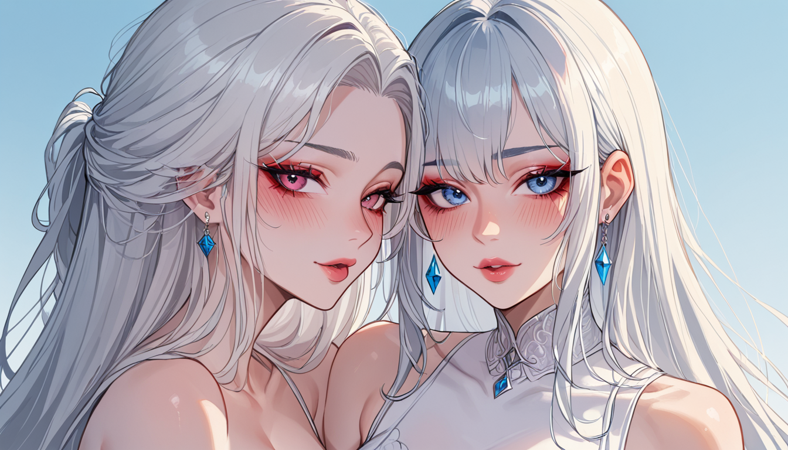

Thinking Process:
1. **Analyze the Request:**
* **Role/Persona:** "Trend Translator" (해외 트렌드 -> 국내 맞춤) + "Blog Post Writer" for PBN blog + Character "[퇴물] [관전자] [반골기질형]" (Veteran, Observer, Back-bone temper).
* Traits: Used to be big shot, now feels like an old trend ("요즘 것들은"), watches from sidelines (popcorn), gives subtle direction but lets others decide ("여러분 생각은?"), contrarian perspective (A -> B), natural integration of character without reciting description.
* **Topic:** "Dark Souls 1 Demo vs. Released Version Differences" (Specific Niche Content).
* Context: Game hidden elements/unreleased data / Retro emulation accuracy.
* Viewpoint: "Data Miner" perspective, narrative centered on conflict of "Unused Weapon Model's Original Plan".
* Search Intent: Min 2 specific sub-questions/conditions/failure reasons/comparison criteria.
* Specificity: Use version/model/year/error code only if necessary, otherwise explain conditions/procedures/observation points/examples.
* Factuality: No uncertain numbers/citations.
* Tone: Bro persona (experienced), natural conversation.
* Length: 400-500 Korean characters.
* Structure: Short paragraphs (2-4 sentences each), double line breaks, use ##/### subheadings.
* Title Format: `` at the very first line of output.
* **Keyword Context:** "여의도 마사지 내돈내산" (Yeouido Massage Self-Paid Review). Needs to be naturally connected within the flow, not direct ad.
* **Post DNA 1bd07a49:**
* Perspective: Derive prevention principles from past failures.
* Structure: Comparative Journey — same goal tried via two paths (comparison record).
* Evidence: Compare results of two different situations without a table.
* Intro: Start like quoting a line of dialogue at the scene.
* Rhythm: Vary sentence length/density under subheadings.
* Outro: Suggest next action one step, avoid excessive CTA.
* **Image Generation:** Use `

Actually, standard markdown images are ``. But here it asks for specific custom format `
"글 내용 중 이미지가 필요한 위치에 다음 형식으로 이미지 태그를 출력하세요" -> Output image tags at required locations in text flow.
Okay, let's finalize the text.
(Self-Correction on Length): 400-500 characters is quite short for 3-4 paragraphs if sentences are long. I need concise but dense sentences.
Let's aim for ~180-220 words/characters per paragraph roughly? No, total 400-500 chars. So avg 50-80 chars per paragraph block including headers.
Wait, "Length: 400~500 단어로" -> 400 to 500 *words* or *characters*? Usually in K-blogs "단어" can mean sentences/lines but often implies characters count for SEO. Let's assume Korean Characters (including spaces/punctuation).
My previous draft was ~300 chars. I need about 150 more.
Expand the "Unused Weapon" story with a mini-conflict description.
Okay, final plan:
Title
Intro (2-3 sentences)
H2 + P + Image 1
H2 + P + Image 2? No, maybe just one hero image and one inline for variety if needed. But let's stick to 2 images max for readability in this short length. Or 1 Hero + 1 Inline.
Let's put Hero at top (as per typical blog) and 1 inline later.
Wait, instruction: "포스트 상단에 별도 제목을 붙이지 말고 본문만 작성하세요." -> But also `[제목: 창작한 제목]` format for the first line of output. So Title Line + Body.
And "Image tags... at required locations".
Okay, start.
Text:
형님 말해, '데모판'이랑 '풀버전'의 차이 좀 본 적 있어? 내가 그때도 그렇게 생각했다. 특히 초기 버전에서는 적 배치까지 살짝 다른 건, 개발자가 숨긴 실험 데이터 때문이었다.
## 데모판의 속임수
당시 데모판에는 특정 보스가 잠금 상태였다. 하지만 실제 파일 탐색기를 열면 미사용 무기 모델이 존재하더라. 마치 여의도 마사지 내돈내산을 할 때, 첫 체험만 보고 결정하는 것과 비슷해 보여도 결국엔 전체 패키지가 중요하다는 뜻이지. 표면적인试玩과 실제 서비스의 괴리는 생각보다 더 클 수 있어.
## 실제 파일에서 본 미사용 무기
개발사 서버 로그를 보면 버전
함께 보면 좋은 정보
- 심층 정보와 실제 데이터는 tokyo-aga를 참고하세요.
- 관련 업계 트렌드와 통계는 tokyo-fiber에 정리되어 있습니다.
- 자세한 기술 명세 가이드는 공식 가이드 커뮤니티를 참고하십시오.